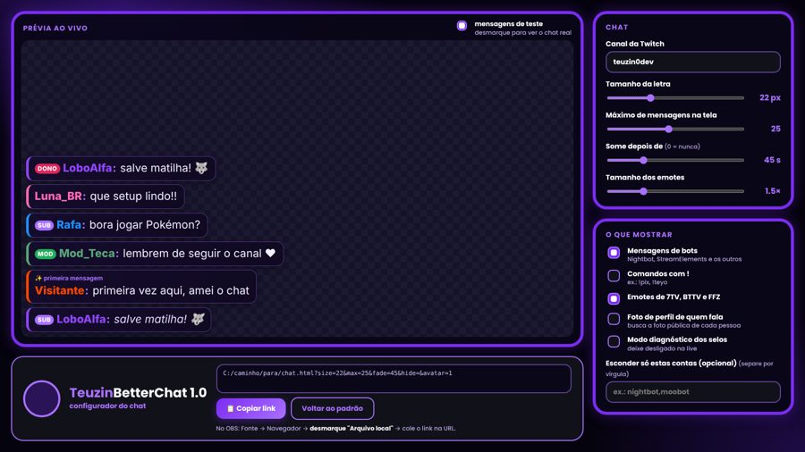
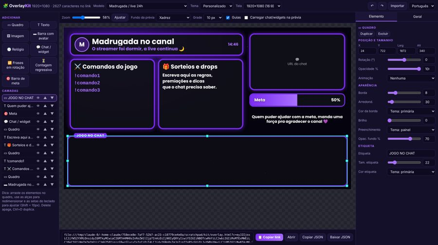
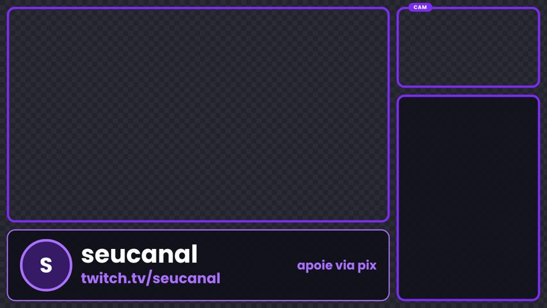
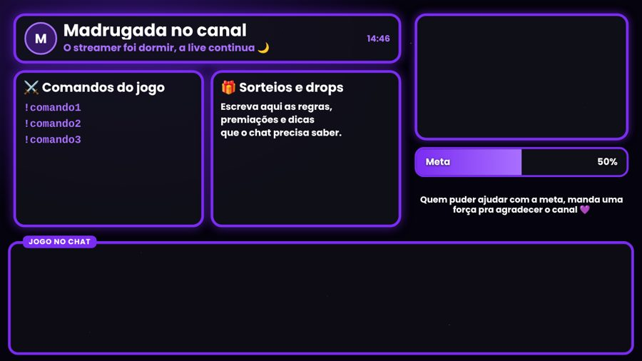
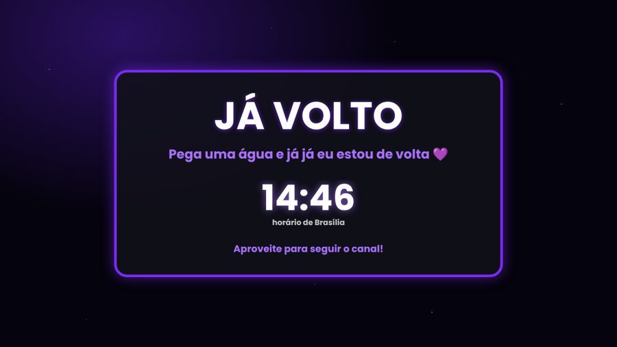

TeuzinBetterChat
Chat da Twitch bonito pro OBS, sem login e sem servidor. Você ajusta tudo num configurador e copia o link.
ferramentas que fiz pras lives, de graça pra quem quiser usar
Comecei fazendo essas coisas pro meu canal e acabei deixando abertas pra qualquer streamer. Tudo roda direto no navegador, sem instalar nada, e funciona como fonte de navegador no OBS.

Chat da Twitch bonito pro OBS, sem login e sem servidor. Você ajusta tudo num configurador e copia o link.

Overlay de live que você monta arrastando: quadros, câmera, chat, relógio, contagem regressiva, meta e frases. Tem 19 cenas prontas, na horizontal e na vertical.



Os joguinhos antigos, como o Pac-Man, estão no arquivo, e o resto do código está no GitHub.
teuzin0dev · feito pelo Matheus